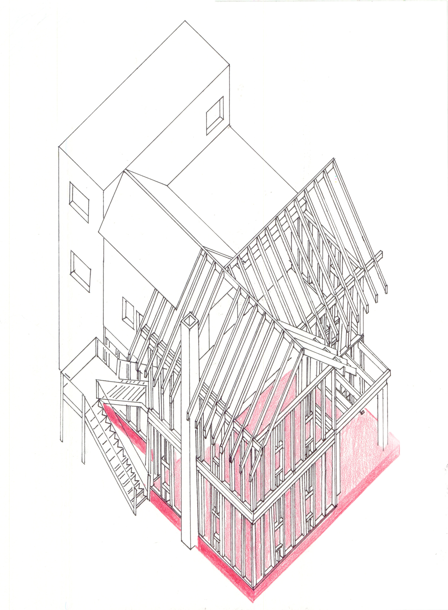
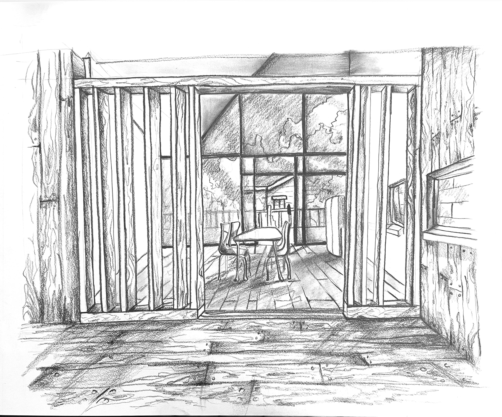

For me, this "plus" was simply a renovation of an existing house on the site in Ithaca. I focused on the tectonics of the light timber frame house, paying careful attention to show these different layers of structure and cladding.
The result is a sort of "skeleton" of a former house, wrapping itself around a renovated existing house, and the extended addition, differentiated by its flat, as opposed to gabled, roof.
What follows are select views from different parts of the house; I took care to juxtapose old and new in a variety of ways: A stud frame wall demarcates the threshold between the addition and the renovated part of the house.

A steel staircase, atypical of a light timber framed house, serves as an alternate entrance to the porch overlooking the skeletal frame.

This is another perspective showing the threshold between old and new from the viewpoint of the old and renovated part. You can also see the exposed rafters above.